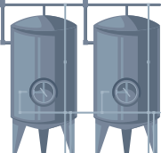

О компании
ОсОО «Кант Сут» занимает одно из ведущих мест в молочной промышленности Казахстана.
Компания была основана 21 октября 1 998 года на базе сепаратприого цеха Фрунзенского
гоммзаволд. Предприятие занимается заготовкой, переработкой и экспортом сырьевого
малые и готовой молочной продукции.
гоммзаволд. Предприятие занимается заготовкой, переработкой и экспортом сырьевого
малые и готовой молочной продукции.
Продукция
Наша специализация — сливочного
масла, кисломолочной и
кислородной продукции из чистого
сырья
масла, кисломолочной и
кислородной продукции из чистого
сырья

Производство
В 2012 году на территории завода
было построено новое здание с
современным оборудованием по
переработке и фасовке молочной
продукции. Предприятие работает в
режиме полного цикла
было построено новое здание с
современным оборудованием по
переработке и фасовке молочной
продукции. Предприятие работает в
режиме полного цикла

Качество
Высокое качество товара
подтверждает международный
стандарт ISO 22000 «Системы
менеджмента безопасности
пищевой продукции» и сертификат
«Халяль»
подтверждает международный
стандарт ISO 22000 «Системы
менеджмента безопасности
пищевой продукции» и сертификат
«Халяль»